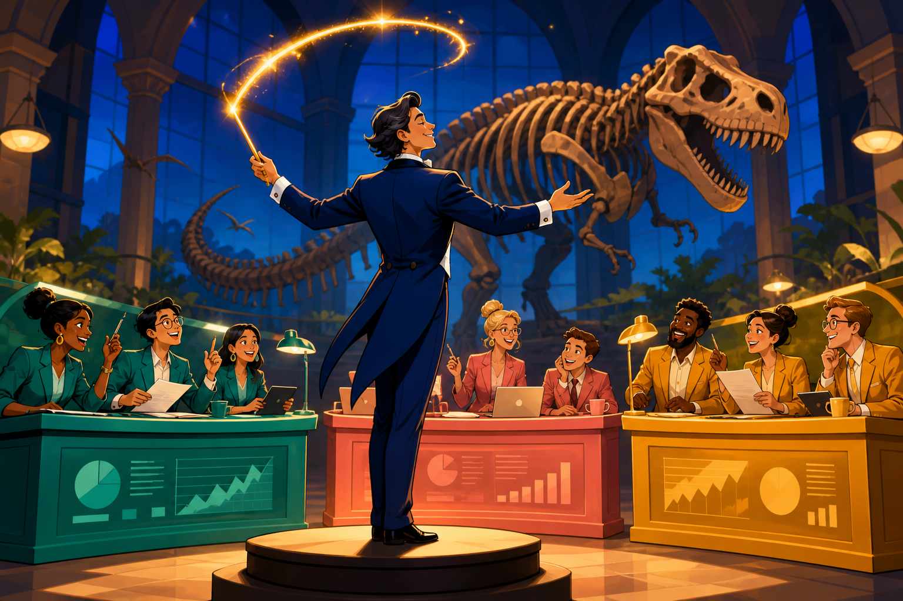
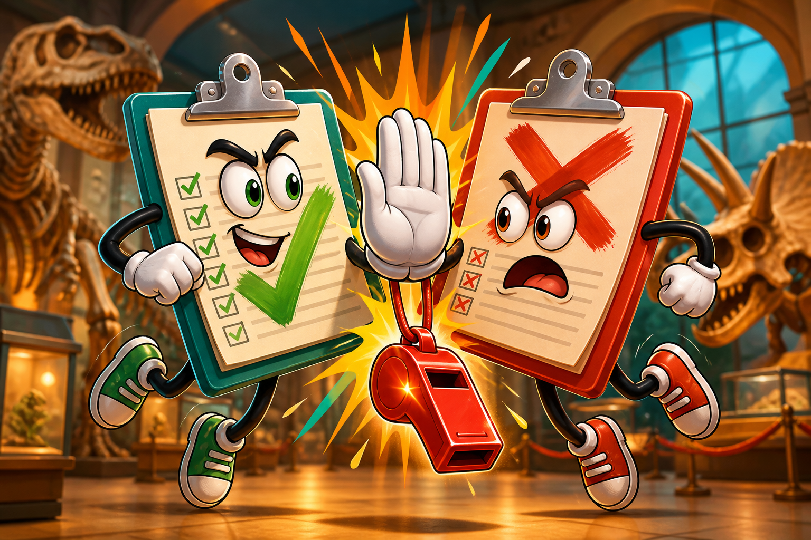

MGT 409 · Lecture 10 · Tauhid Zaman
One LLM. Several MCP tools. Refuse when they clash.
40 min talk, then 40 min coffee-cart vibe. Homework 5 is Peabody — do not solve it in class.
Instructor outline — remove before class.
Lecture ~40 min · vibe ~40 min · skip this slide in class
Wrap each system as a tool with a schema. list_tools + call_tool. USB-C for agents.
A manager-agent that chooses tools, orders them, reads results, and either answers or stops.
Lecture 4’s Riemann swarm ran hundreds of attempts in parallel and kept what survived. Today the orchestrator is sequential: pick the next desk, and if two desks contradict, refuse.

Hours, exhibits, and policy still sit at separate desks. The model only decides whom to ask, and whether the answers are consistent.
A two-desk question answered from one tool is a confident wrong answer at the front desk.
MCP is the plug. The orchestrator decides which plugs to use, in what order, and when to stop.
| Call | You get | Manager use |
|---|---|---|
list_tools() | Names, descriptions, JSON schemas | What can this agent even do? |
call_tool(name, args) | Structured result from that desk | Evidence, not memory of peabody.yale.edu |
If the answer is not in a tool result, it is not a museum fact. It is a hallucination with a visitor-facing tone.
You own the loop. The model only proposes the next move. Cap the steps so it cannot wander forever.
List tools first. Hours first is a good default: if you are closed, the gallery question is moot. If both desks agree, answer with both facts.

action: answeraction: refuseDo not split the difference. “Let me get a human” is a product feature. HW5 plants at least one clash; graders will check it.
Managers audit traces. Models rewrite history. Your tool_trace is the receipt. JSON also needs conflict.detected and a short summary.
| Decision | Bad default | Better default |
|---|---|---|
| Who owns each tool? | One mega-wiki | One desk, one MCP tool, one owner |
| When tools clash? | Model “splits the difference” | Refuse + human |
| How do we audit? | Chat screenshot | Ordered tool_trace |
| Where does the LLM live? | Inside every tool | Orchestrator only (tools stay dumb JSON) |
Buying an SDK does not buy agreement between Marketing’s PDF and Legal’s PDF. You still own refusal and traces.
2026-07-28No initialize handshake, no Mcp-Session-Id. Each tools/call is a self-contained HTTP request.
One folder: plugin.json + optional mcp.json + skills. ChatGPT, Codex, Cursor, Copilot, VS Code load the same package.
vercel.com/blog/introducing-agent-plugins · agent-plugins.org
MCP looks like ordinary HTTP. The fight is who owns the tools, not who owns the chat window.
orchestrator.py imports MCP; multi-tool sample; refuse on clashHomework 5: Peabody MCP and Orchestrator →
Vibe is a toy coffee-cart so the museum pack stays for the assignment.
refuse. Never invent a blended policy.Next: security and guardrails — what happens when the guest is actually an attacker.
Swipe or use buttons to advance � projector icon for presentation